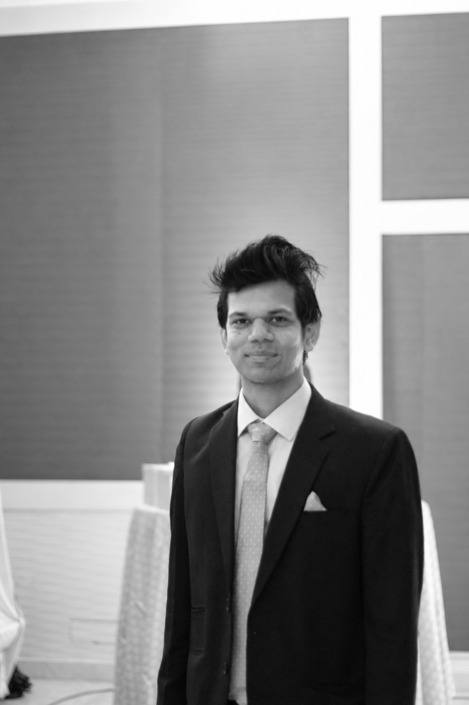

We use light to reveal the character of architecture—and shape the way it is experienced.
enLIGHTen is a lighting design practice exploring the relationship between spaces, perception and emotion.

Our philosophy
Before you notice the light,
you feel the space.
Your eye finds its way through a space almost instinctively. A softly lit wall draws you closer. A pool of light invites you to pause. Shadow leaves room for curiosity. Together, these moments shape your experience of the architecture.
There is precision behind that feeling—the angle of a beam, the warmth of a source, the balance between what is revealed and what remains quiet. Each decision contributes to a whole that should feel effortless.


Behind enLIGHTen
A personal way of seeing.

“I’m interested in that moment when you enter a room—before you’ve noticed the details, but you already feel something.”
That is where my work begins: with the person experiencing the space. I think about what they will notice, how they will move and what will make them want to stay.
For me, a lighting scheme comes alive when the space finds its own rhythm, and the people within it feel at home.
Explore our process ↗